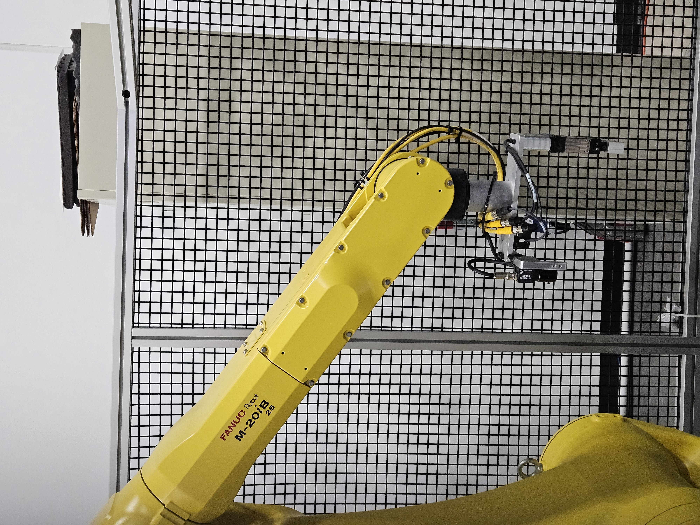
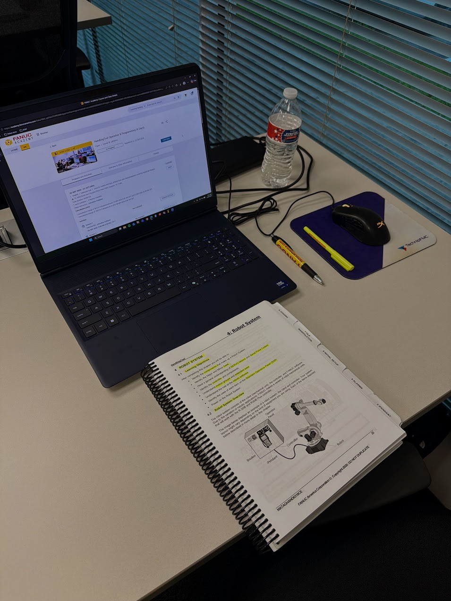
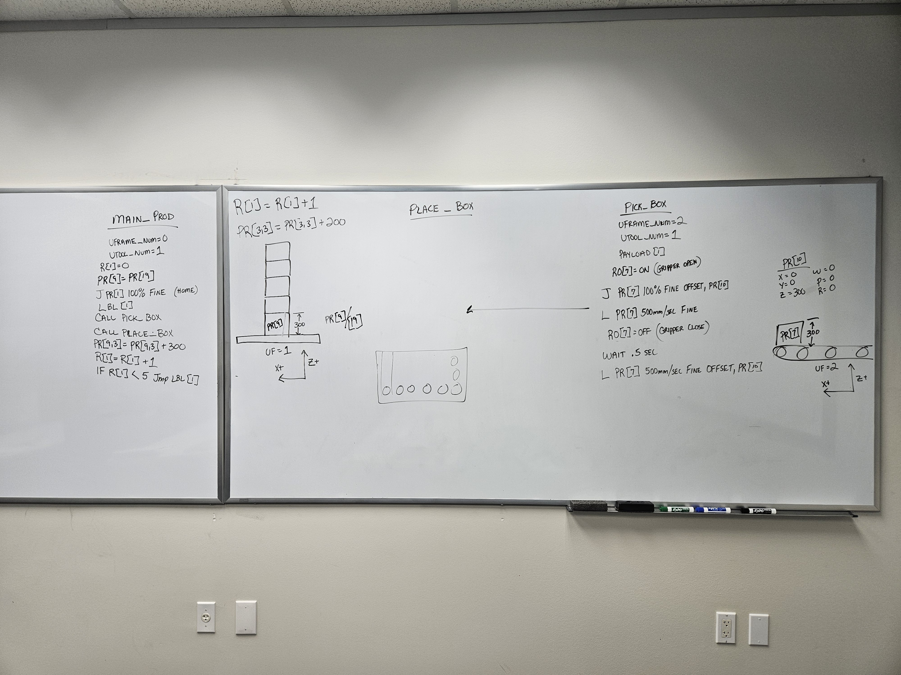
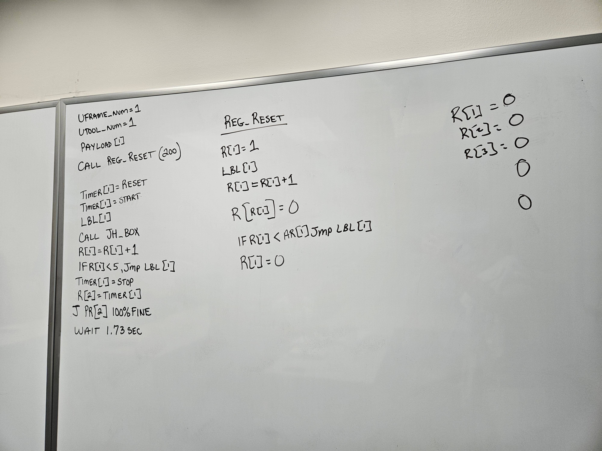
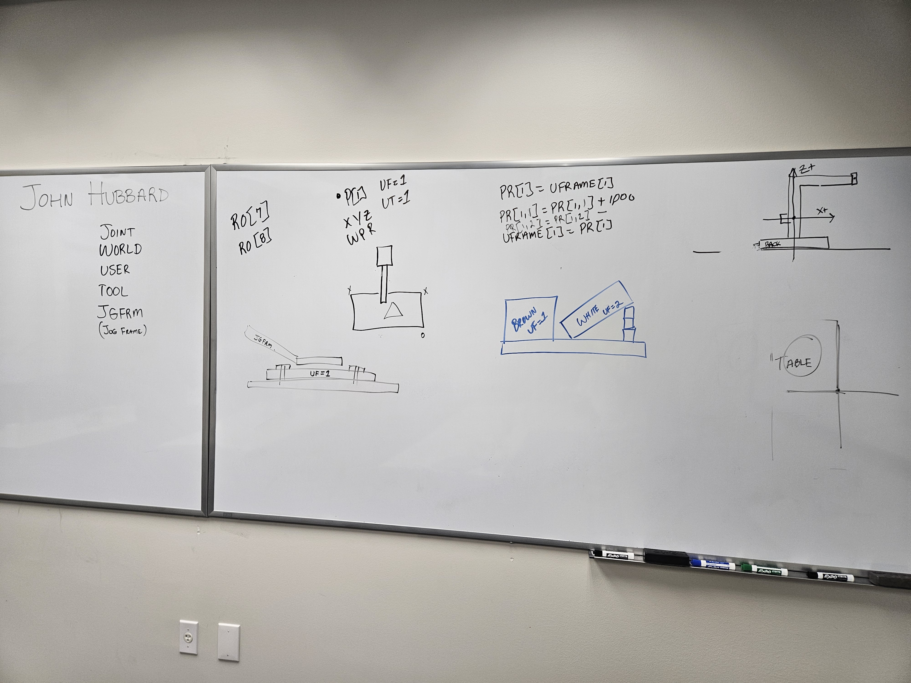
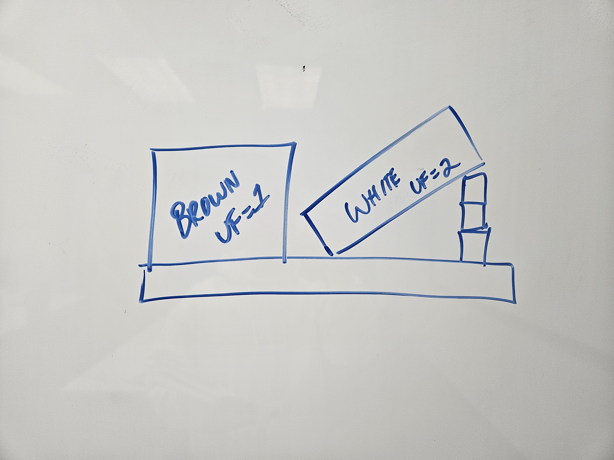
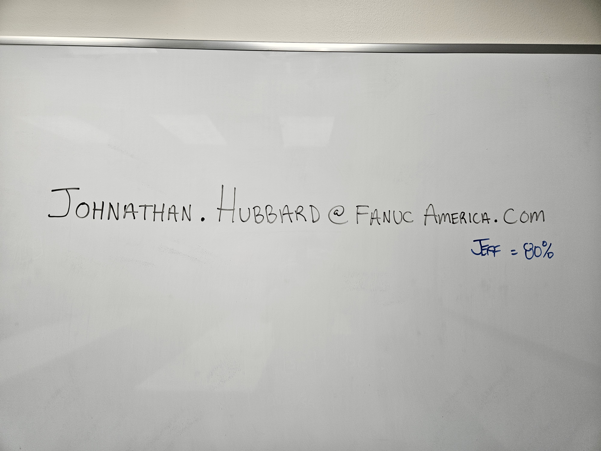

FANUC M-20iB/25 Training Cell Hands-on programming and tooling configuration with the 6-axis FANUC M-20iB/25 industrial robot and pneumatic gripper assembly.

HandlingTool Curriculum & System Architecture Coursework covering R-30iB Plus controllers, iPendant navigation, servo motor/serial pulse coder architecture, alarm diagnostics, and file manipulation.

Pick & Place Subroutines (MAIN_PROD / PICK_BOX / PLACE_BOX)
Structuring modular call routines using User Frames (UF=1, UF=2), Robot Outputs (RO[7]) for gripper actuation, and Z-axis stacking offsets in Position Registers.

Cycle Timing & Indirect Register Addressing (REG_RESET)
Using TIMER[1] to benchmark cycle times alongside an argument-driven register reset loop utilizing indirect addressing (R[R[1]]=0).

Coordinate Systems & Frame Manipulation
Configuring JOINT, WORLD, USER, TOOL, and JGFRM coordinate systems and dynamically shifting User Frames via Position Register elements.

Multi-Plane User Frame Setup (UF=1 & UF=2)
Mapping separate planar coordinate frames for flat (BROWN UF=1) and inclined (WHITE UF=2) workpieces on a shared fixture table.

Training Completion at FANUC America (Houston, TX) Instructor sign-off from the 4-day HandlingTool Operation & Programming course.